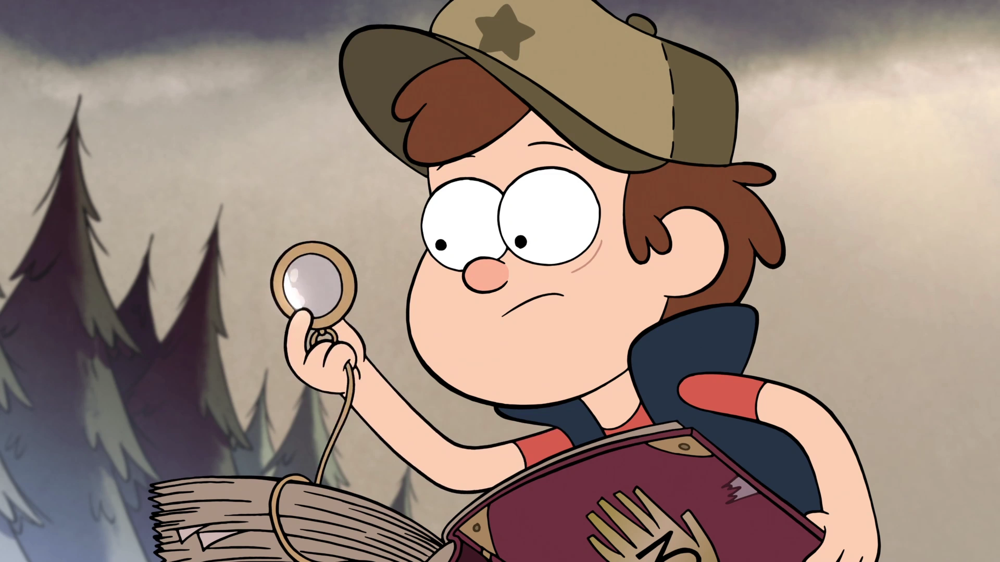
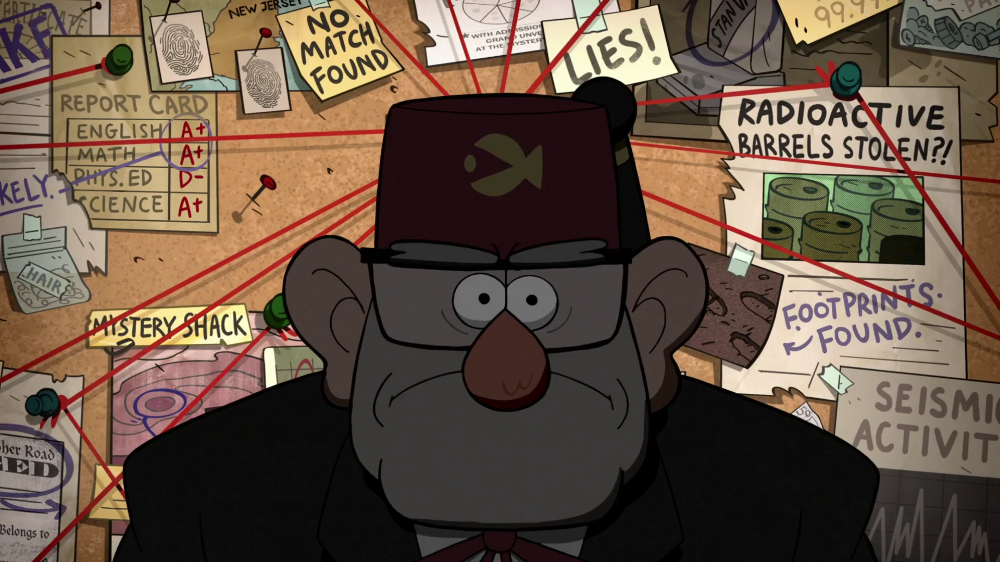

Season 1

Image from Gravity Falls Wiki - Fandom and belongs to Disney Television Animation
The first season begins with twins Dipper and Mabel Pines being sent away by their parents for the summer to Gravity Falls, Oregon; here they live with their great uncle, or “Grunkle” Stanford in the Mystery Shack, which is a tourist trap. Dipper finds a mysterious journal numbered “3” hidden in the woods, where he finds the truth about Gravity Falls’ supernatural side. After some adventures, the Pines encounter a kid named Gideon Gleeful, a fake psychic who tries to get together with Mabel. When Dipper tells him Mabel is uninterested, he attacks with a magic amulet, which is revealed to have been discovered in a second journal numbered “2.” Later, at a carnival, Mabel wins a pig named Wattles, and the twins meet time traveler Blendin Blandin, who is arrested because Dipper and Mabel caused time anomalies.
In the final scene, Grunkle Stan takes the second and third journals into a secret door behind the vending machine, and reveals that he has Journal 1. All three journals are shown to have schematics for a large machine, which Stan completes.
Much later, Gideon returns, and wants the deed to the Shack, but the code to the safe it’s locked in is in Stan’s mind. Gideon decides to summon a mind demon named Bill Cipher, who is tasked with stealing the code from Stan’s mind. The twins and their friend Soos follow Bill into Stan, where they successfully stop him from getting the code. Gideon gives up on Bill, who gets angry and begins attacking Soos and the twins. They finally “defeat” Bill who gives them a foreboding message before leaving. Gideon steals the deed using dynamite, and the Pines are forced to live with Soos and his grandma. Gideon is able to steal Journal 3 from Dipper, and gets angry that there is still one missing; he had thought there were only two. Dipper and Mabel manage to defeat Gideon, and he is put in prison.
In the final scene, Grunkle Stan takes the second and third journals into a secret door behind the vending machine, and reveals that he has Journal 1. All three journals are shown to have schematics for a large machine, which Stan completes.
Season 2

Image from Gravity Falls Wiki - Fandom and belongs to Disney Television Animation
The second season starts with a huge party to celebrate the grand reopening of the Mystery Shack. When government agents arrive to investigate the town, Dipper is determined to help them discover the mysteries using the journal. When the agents don’t believe him, Dipper summons an army of the undead, which Grunkle Stan suddenly protects the twins from. He reveals that he had always known about the supernatural side of Gravity Falls, and wants to protect the twins from it. Later, Dipper, Mabel, Soos, and Wendy, who is Dipper’s crush, discover and investigate the Author’s bunker. Inside, they find a mysterious laptop and a terrifying shapeshifter, which causes Dipper enough panic that he confesses his love for Wendy; she later admits she had always known, but that Dipper was way too young for her.
When Dipper and Mabel open the laptop, they find it is locked behind a password, but Mabel falls in love with a guy putting on a puppet show; Dipper tries to find the password while Mabel puts on the show. When the laptop gives Dipper only one more attempt at the password, Bill Cipher appears and offers a deal: one puppet in exchange for the password. When Dipper agrees, Bill chooses him as the puppet, destroys the laptop, and tries to get Journal 3, which is being used in the play. He mentions that Dipper was getting too close to uncovering major answers, and had to stop him. Dipper and Mabel manage to get Bill out of Dipper’s body, and go back to the Shack.
Eventually, the twins discover a group called the Society of the Blind Eye. They enlist the help of the local crazy person: Old Man McGucket. They find that the Society of the Blind Eye is a group of locals that use a Memory Gun to erase the memories of any townsfolk who see the town’s supernatural side. They manage to see the memories of Fiddleford McGucket, who turned out to be the Author’s assistant, and the creator of the Society of the Blind Eye. He had created the Memory Gun to forget the troubling things he had seen, and ultimately went insane. He is able to fix the laptop, and says that “something terrible is comin'! The apocalypse! The End Times!”
The next episode begins with Stan completing the machine, and gravitational anomalies start. Later, the kids are having fun with Stan, when he says there’s something he wants to tell them. Suddenly, the government agents from earlier appear with a special ops team, which secures the house and arrests Stan on the charges of stealing government waste; they start taking the kids to Child Protective Services. The twins break free and return to the Shack to clear their Grunkle’s name, while Stan uses one of the gravitational anomalies to escape custody. Dipper and Mabel find out that Stan did steal government waste, and that he had many fake ID’s; a newspaper states that Stan had died, and an unnamed grifter that looked like Stan was at large. They find the code to the secret vending machine door, and go down with Soos. They find that Stan had all of the journals, and that the machine could tear the universe apart. Right before they can shut it down, Stan stops them, and tells them that earlier he wanted to say that they were “gonna hear some bad things about me, and some of them are true, but trust me. Everything I've worked for, everything I care about, it's all for this family!” Mabel says that she trusts him and allows the portal to open. A figure walks out, and is revealed to be the author of the journals: Stan’s brother.
The Author reveals that his name is Stanford, and that Grunkle Stan’s real name is Stanley. Growing up, they were best friends, but when Stanley accidentally broke one of Ford’s… I actually don’t want to write a 20 paragraph essay, so… Sorry!!
The Book of Bill

Image from Wikipedia/Gravity Falls Wiki - Fandom and belongs to Disney Television Animation
The Book of Bill is a book Bill Cipher wrote after his demise, in which he attempts to persuade the reader to bring him back. This book is filled with lore and is great for Gravity Falls fans. It is, however, not for young readers, but older fans will enjoy it. SO WHAT ARE YOU WAITING FOR! BUY MY BOOK!